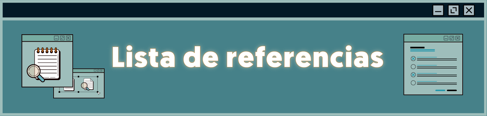

Lista de referencias
Unidad I
- Baca, G. (2015). Proyectos de sistemas de información. Editorial Patria. ISBN: 9786077441380
- Edge, J. (2020). Agile: Una Guía para la gestión de proyectos agile con Scrum, Kanban y Lean. X Bravex Publications. ISBN: 9781647486303
- Rodríguez, R., García, J. & Lamarca, I. (2007). Gestión de proyectos informáticos: métodos. X herramientas y casos. UOC. SI ISBN: 8497885686
- Valderrama, S. (2020). Ingeniería de requerimientos. Editorial Académica Española. ISBN: 9786200401649
Unidad II
- Hohpe, G. (2020). The software architect elevator: Redefiing the architect ́s Role in the digital enterprise. Editorial O'Reilly Media. ISBN: 9781492077541
- Edge, J. (2020). Agile: Una Guía para la gestión de proyectos agile con Scrum, Kanban y Lean. X Bravex Publications. ISBN: 9781647486303
- Piattini, G. et, al. (2022). Calidad de Sistemas de Información: basada en estándares internacionales. X Independently published. ISBN: 9798840673645
Unidad III
- García, A. et. al. (2023). Buenas prácticas de la ingeniería de software: pruebas de software. Revista Cubana de Transformación Digital, 4(2), 205-1. X https://rctd.uic.cu/rctd/article/view/205
- Hohpe, G. (2020). The software architect elevator: Redefiing the architect ́s Role in the digital enterprise. Editorial O'Reilly Media. ISBN: 9781492077541
- Pantaleo, G. & Rinaudo, L. (2016). Ingeniería de software. Ed. Kindle. Alfaomega Grupo Editor. ASIN: B01MQW1IZ1
- Rojas, F. & Peña, E. (2023). Integración de la teoría de la ingeniería de software y la metodología de despliegue de función de calidad para apoyarla medición del estado de progreso en proyectos software. Revista Ingenierías USBMed, 14(1), 48-56. https://dialnet.unirioja.es/servlet/articulo?codigo=8960216
Páginas web
Para saber más Unidad I
SCRUM
Historias de usuario
Para saber más Unidad II
Desarrollo del Front-end
Pruebas del Front-end
Desarrollo del Back-end
Para saber más Unidad III
Interfaz de programación de aplicaciones (API)
Programación Full Stack